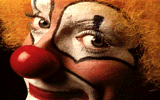
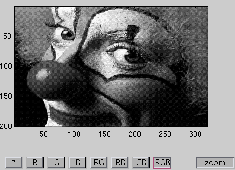
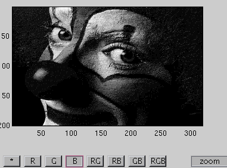
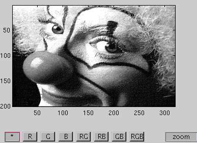

fn_color2bw
GUI interface that helps user to convert a color image to a grayscale image while maintaining the result as visually informative as possible.
This is very useful for example when one has produced color figures for a publication and want to have them grayscale in the printed version for economic reason.
Contents
Syntax
b = fn_color2bw(a)
Example
load clown a = fn_clip(X','',map); b = fn_color2bw(a);




Source
Thomas Deneux
Copyright 2005-2012